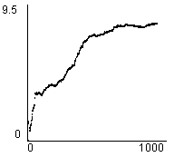
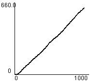
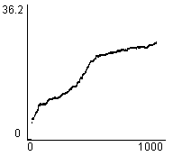
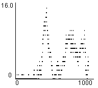
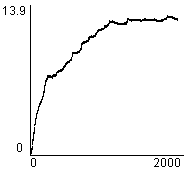
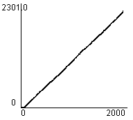
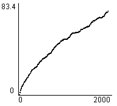
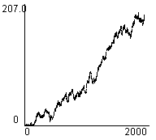

1. Editor
2. Simulator
3. Evaluation Tools
4. An Example Session
5. Algorithms
 a. Driving policies
a. Driving policies
 1) Shortest Path
1) Shortest Path
 2) Smarter SP
2) Smarter SP
 3) Co-learning
3) Co-learning
 4) Aggressive
4) Aggressive
 b. Traffic light controllers
b. Traffic light controllers
Co-learning
Road users choose their next lane when crossing a junction so as to minimize probable waiting time at the next junction.
If a next lane has traffic lights, a co-learn value is requested from the traffic light control algorithm, if its is the kind to compute co-learning values. Along with this the road users sends a value for itself to the controller so other road users may benefit from it.
Co-learning will greatly improve the distribution of road users on a map with many possible shortest paths (say, a grid-like infrastructure), but will have little effect if there are few
possibilities or the traffic load is too high to distribute much.
When traffic is unpredictable though, co-learning is less usefull.
| (Map: Simple) Average Junction Waiting Time |  |
| (Map: Simple) Total Road Users Arrived |  |
| (Map: Simple) Average Trip Waiting Time |  |
| (Map: Simple) Total Waiting Queue Length |  |
| (Map: Complex) Average Junction Waiting Time |  |
| (Map: Complex) Total Road Users Arrived |  |
| (Map: Complex) Average Trip Waiting Time |  |
| (Map: Complex) Total Waiting Queue Length |  |